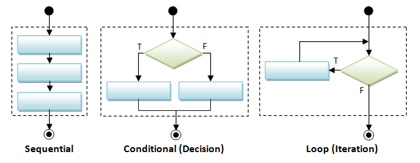

Statement
- expression statement
- compound statement
- statement scope
- condition statement
- iterative statement
- jump statement
tryblocks and exception handling
C++ defines a set of flow-of-control statements.

Expression statement
A single expression ending up with semcolons.
std::cout << "fuck you\n";
Compound Statement
surrounded by a pair of curly braces. It is stack locally.
{
int i = 0;
i++;
}
Note that functions are typically Compound Statemen (stack locally).
Statement Scope
Some local variables is only visible in the control structure of the if, switch, while, for.
for (int i = 0; i!= 10; ++i)
std::cout << i << std::endl;
i = 0; // i is only visible in the control structure.
Conditional Statement
ifandif else.switchandenum.- Don't forget
breakat the end of eachcase. defaultlabel
- Don't forget
Iterative Statement
在 for loop 中经常会见到
for (unsigned i = 0; i < 100; i++){
std::cout << i << std::endl;
}
我想要 小于100 的所有数！ 那是什么？ 就是
在看一个案例
for (unsigned i = 0; i != 100; i++){
std::cout << i << std::endl;
}
我想要 不等于100 的之前的所有数， 然后 真的没有出来！100没有出来，所以是不是0 - 99
Example 1 : != is better than <
Both != and < can do the same job.
Both a sad news!
The most common iterator does not gurantee the implementation of less or greater than.
Please read container. It should have the section of iterator.
If you are farmilar with != to do the iteration, you can make your code work on more containers! (not just the string, vector....)
Jump statement
C++ offers four jumps break, continue, goto and return.
breakterminates the nearestwhile,do while,forandswitch. Sometimes, it is identical toreturn.continueterminates the current iteration, and immediately begins the next iteration.gotoshit jumps. Don't use itreturnreturn to the address of caller. It is closely associated with stack.
Try-Blocks and Exception Handling
Why error exception handling? It usually happen run-time.
- losing a database connection
- unexpected inputs (don't obey the assumption)
Try, throw, and catch Statements (C++) https://docs.microsoft.com/en-us/cpp/cpp/try-throw-and-catch-statements-cpp?view=msvc-160
Why Exception Handling is Important ?
From C++ Primer pp196
Wrting exception safe code is hard.
If an exception occur, it usually indicates that the normal flow of program is interrupted. That means you have to properly "clean up" before exiting.
- clean up to avoid "memory leak"
- clean up to restore the "I/O file" to an appropriate state.
- clean up to restore the remote resources to an appropriate state.
- ...
This topic is extremely hard, so the note will not focus on it.
CppCon 2019: Ben Saks “Back to Basics: Exception Handling and Exception Safety” https://www.youtube.com/watch?v=W6jZKibuJpU Note that the error exception can cascade. It is easier for programmers to write code.
Safety in modern C++ and how to teach it https://www.youtube.com/watch?v=CWglkNBUmD4
Modern C++ best practices for exceptions and error handling https://docs.microsoft.com/en-us/cpp/cpp/errors-and-exception-handling-modern-cpp?view=msvc-160